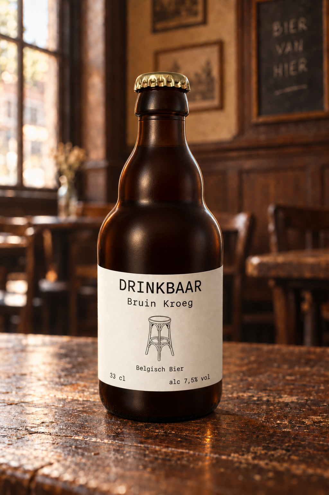

Bruin
Kroeg.
Denk aan een bruine kroeg, het eikenhout aan de muur, de rook in de gordijnen en de geur van heerlijk bier. Denk aan de goeie momenten, de straffe verhalen, de goeie moppen en de flauwe moppen. Denk aan het kameraadschap met oude bekenden en nieuwe onbekenden. Aan de toog is iedereen gelijk. Dat is onze cafécultuur en dat is de essentie van Bruin Kroeg.
